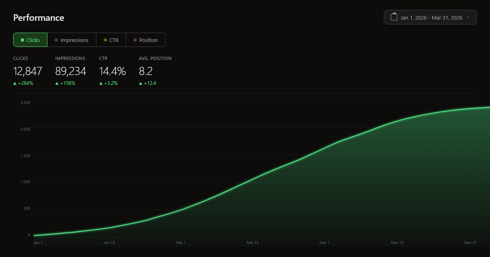
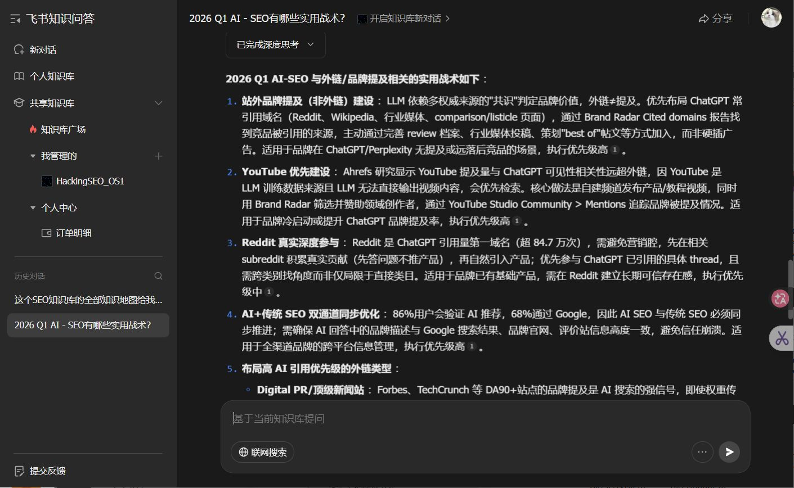

weihacking
关于
做了六年海外 SEO，帮 200 多个品牌从零开始拿到排名。后来发现光有排名不够，AI 搜索在改变一切。现在专门研究怎么让品牌同时被 Google 和 AI 看见。9 个品牌跑通了从策略到出结果的全流程，最快 14 天上首页。
我做的是在 AI 和搜索的交叉地带凿路。
六年海外 SEO，200+ 品牌从零到稳定收入。运营 hacking 周刊，拆解 SEO 暗面手法、AI 搜索策略和出海增长。公司是 Soulcraft Limited，和炬象未来（Concrete Future AI）深度合作。


推文哲思
这里放的是我在推特和即刻上发的碎片想法。大多数写于凌晨两点，第二天早上没删掉的才留下来。主题就一个：搜索和 AI 的规则在变，大部分人还在用旧地图。
你花了一年学 GEO。
Google 说：那就是 SEO。
developers.google.com 白纸黑字：AI Overviews 用的是同一套排名系统。
没有什么「生成式引擎优化」。没有什么「答案引擎优化」。
有的只是：你的内容值不值得被任何系统引用。
名字不重要。能力才重要。
Condé Nast CEO 说：按搜索流量归零规划。
不是危言耸听。是连续三年预测都低估了实际跌幅。
搜索占比从过半跌到 25%，还在跌。
你的商业模式还建立在「Google 会给我流量」这个假设上？
新生存法则：把搜索流量当奖金，不当工资。
能活下来的只有两种人：有真权威的，和有真粉丝的。
SEO 的终局不是排名第一。
是被引用。
Google 在变成答案引擎。AI 在变成推荐引擎。
两者都需要同一个东西：一个值得引用的观点。
不是「最全的指南」。不是「2026 年最新」。
是一句话让人停下来想：「操，他说得对。」
排名第一，点击率 -58%。
Ahrefs 的数据。不是预测，是已经发生的事。
AI Overview 吃掉了你的点击，然后把你的内容嚼碎喂给用户。
你还在优化 title tag？
新规则：被引用 > 被看见。被信任 > 被点击。
排名是虚荣指标。引用才是新的第一名。
知识产品
周刊免费，每周拆一个 SEO 或 AI 搜索的真实案例。OS1 是付费知识库，33 篇文档 60 万字，接了飞书 AI 可以直接问问题。不是教程，是我把六年踩过的坑和摸到的路整理成了一个系统。
& HackingSEO OS1
周刊免费看，每期拆一个真实案例。OS1 是我把所有方法论打包的付费知识库，60 万字，接了飞书 AI 你可以直接问它问题。带着你的业务问题来就行，不需要先懂 SEO。
结果向交付
我卖的不是方案，是结果。高权重站发文章让你被搜索引擎和 AI 同时看见，社媒截流从竞品评论区把人引过来，关键词矩阵帮你找到别人没注意到的搜索入口。每一项交付都是数字，你自己能在后台查。
开源工具
自己用的工具，顺手开源了。NicheDigger 是挖词引擎，一个周末写出来的原型，现在是整个 PSEO 系统的核心。外链导航帮你找高质量资源站。Intent Workbench 可以在线跑意图分析。
知识精选
这三条是我最近从 Ahrefs 和 Semrush 的大规模研究里拆出来的。不是我的观点，是数据说的。如果你还在只盯着外链和域名权重，可能方向已经偏了。
聊聊你的业务，看我们能不能帮到你。
申请免费 30 分钟咨询 →深度合作伙伴：炬象未来 / Concrete Future AI — 出海营销 · AI 社媒自动化 · 电商全链路